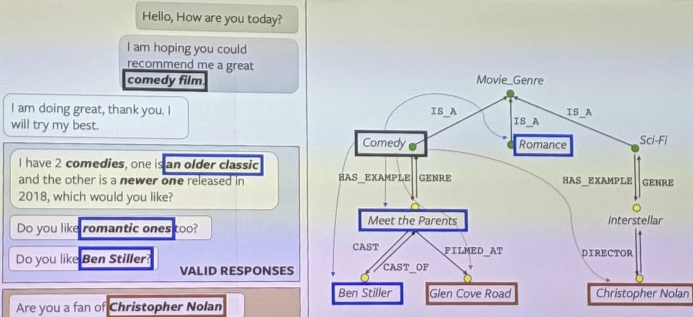
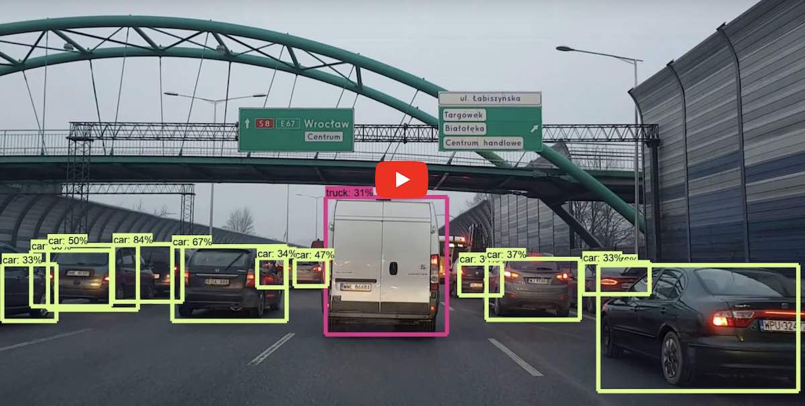

很多人以为“人工智能”就快实现了，是因为他们混淆了“识别”和“理解”。现在所谓的“人工智能”，离真正的智能差的实在太远。有多远呢？真正的工作几乎没有开始。
对于语言，人们常常混淆“语音识别”和“语言理解”，AI 专家们很多时候还故意把两者混淆起来。所以你经常听他们说：“机器已经能理解人类语言了！” 这些都是胡扯。机器离理解人类语言差距非常远。
现在的机器只是“语音识别”，它知道你说的是哪些字，却不能理解你在说什么“意思”。即使加上所谓“知识图谱”，它也不能真的理解，因为知识图谱跟一本同义词反义词词典差不多，只不过多了一些关系。这些关系全都是文字之间的关系，它停留在文字/语法层面，而没有接触到“语义”。

知识图谱的研究者们试图把词语归一下类，找找其中的关系（IS_A 之类的），以为就能够理解人类语言。可是你们想过人类是如何理解语言的吗？许多人都不知道这些词语之间有什么关系。什么近义词，反义词，IS_A…… 这些概念在小孩子的头脑里根本就没有的，可是他们却能理解你在说什么。所以知识图谱不是语言理解的解决方案。
要想产生语义，系统必须拥有人的“常识”，而常识是什么数据，如何获得常识，如何表示，如何利用，谁也不知道。所以理解人类语言是一个毫无头绪的工作，根本不像 AI 专家们说的“已经理解了”。
如果不能真的理解人类语言，什么“智能客服”，“智能个人助手”，全都只能扯淡。做成玩具忽悠小孩可能还行，真的要用来理解和处理“客服工作”，还是放弃吧。
对于视觉，AI 领域混淆了“图像识别”和“视觉理解”。深度学习视觉模型只是从大量数据拟合出从“像素->名字”的函数，能从一堆像素识别出图中物体的“名字”，但它却不知道那个物体“是什么”，无法对物体进行操作。
机器必须要能真的理解物体是什么，它有哪些组成部分，它们的边界在哪里，大概有什么性质…… 他才能有效的对它采取行动，达到需要的效果。否则这个物体对它来说只是一个方框上面加个标签，不能精确地对它进行判断和操作。

更严重的问题是，以像素为基础的图像识别，是没法像人一样准确的识别物体的。人的视觉系统并不是简单的“拍照+识别”，而是“观察+理解+观察+理解+观察+理解……”，是一个动态的，反复的过程。感官接受信息，中间又穿插着理解，理解又“制导”和控制着观察的方向和顺序。
人和动物的眼睛都是会转动的，它被脑神经控制，跟踪着感兴趣的部分。人的视觉系统能够精确地理解物体的“形状”，理解“拓扑”关系，而且这些都是 3D 的。人脑看到的不是像素，而是一个 3D 拓扑模型。人能理解物体的表面是“连续”的，或者有“洞”。他能理解物体的表面是什么质地的，如果用手去拿会有什么样的反应。他能想象出物体的背面大概是什么样子，或者在头脑中旋转或者扭曲物体的模型。
这就是为什么人可以理解抽象画，漫画，玩具。虽然世界上没有猫和老鼠长那个样子，一个从来没看过《猫和老鼠》动画片的小孩，却知道这是一只猫和一只老鼠，后面有个房子。你试试让一个没有用《猫和老鼠》剧照训练过的深度学习模型来识别这幅图？
人脑能够理解“拓扑”的概念，这使得人能够不受具体形态像素限制而正确处理各种物体。其中特别困难的一种，是像衣服这种柔性物体。衣服是可以几乎随意变形的，上面有几个洞。“叠衣服”这种对于人类斯通见惯的事情，对于机器是无比困难的。现在的机器人连桌上的杯子都无法准确地拿起来，就别提这些高难度的物体了。
人脑这一切的理解活动，穿插在了识别物体的过程中，“观察/理解”成为不可分割的整体。深度神经网络从来没有考虑过这些问题，根本没有理解的成分存在，又何谈实现人类级别的视觉能力呢？
现在的深度学习模型都是基于像素的，几乎没有抽象能力，不能构造 3D 拓扑模型。缺乏人类视觉系统的这种“拓扑抽象理解”能力，可能就是为什么深度学习模型需要那么的多的数据，而小孩子学习识别物体根本不需要那么多数据，看一两次就知道是什么了。
深度神经网络其实就是用大量数据拟合出一个函数，所以它们只能做拟合函数能做的事情。可是它们拟合出来的函数也不是那么可靠。人们已经发现可以修改图片上的一些像素，人完全看不出来图片改过，却能让深度神经网络输出完全错误的结果。
人为什么看不出来这些图片被改过呢？因为人提取了里面的拓扑结构，所以人的判断不受少数像素修改的影响。所以，人的视觉系统很可能是跟深度神经网络原理完全不同的。神经网络总是拿“神经元”做比方，我觉得只是忽悠的手段。脑科学研究者其实并没完全搞明白那些神经元是如何工作的。
如果没有真正的视觉理解，依赖于图像识别技术的“自动驾驶车”，是不可能在复杂的情况下保障人们的安全的。机器人等一系列技术，也只能停留在固定场景，精确定位的“工业机器人”阶段，而不能在自然的复杂环境中自由行动。
我认识一些工业机器人的研究者。他们告诉我，深度神经网络那些识别算法太不精确了，根本没法用于准确性要求很高的应用。工业机器人控制不精确打坏产品，是完全不可接受的，所以他们都不用深度神经网络。
要实现真正的语言理解和视觉理解是非常困难的。真正的 AI 其实没有起步，AI 专家们忙着忽悠，根本没人关心其中的本质，又何谈实现呢？我不是给大家泼凉水，初级的识别技术还是有用的，而且蛮有趣的。但除非真正有人关心到问题所在，真的去研究本质的问题，否则实现真的 AI 就只是空中楼阁。我只是提醒大家不要盲目乐观，不要被忽悠了。